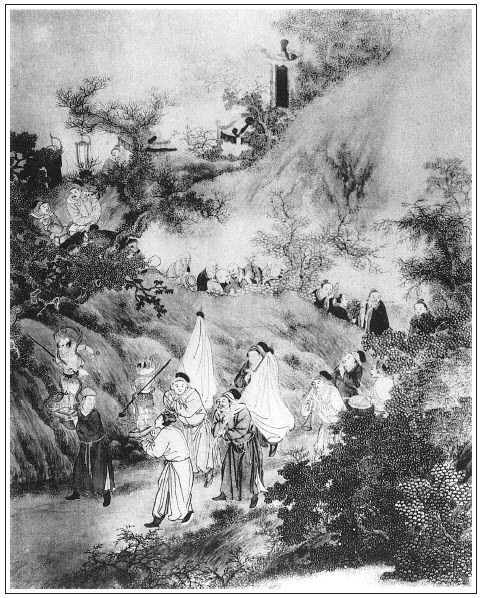

張回瓶兒死於九月十七，西門死於正月廿一，屈指才三月，子虛亦靈矣。後文看其明明一日日敘去，便又有如許文字，而又止是三月中的事，一絲不紊。
此回自二七做起，乃是吳道官唸經，一結玉皇廟。
此回插孟銳，總是忙忙寫分散之局，故早伏後線也。
黃宋為井市小人之妾上紙，其卑污不必言矣。然喪寫請黃太尉，蓋為後文引見而言也。夫引見朝房，又為一百回逃難避兵而言也。總是匆匆欲結，又不能匆匆即結。文字有一定起結如此，而不盡爾也。瓶兒死，春梅未即出頭，固應寫金蓮結果。今看他不寫金蓮結果，先找足金蓮出身。夫金蓮出身者，王招宣府中婢也。欲惡招宣，必惡其妻子。使其子若賢，必能化其母；然使其媳若賢，亦必能勸其子。今欲寫招宣之妻子不賢，而不先寫其媳之父亦屬權奸，則招宣之妻子固應為金蓮受報，而其媳又何辜受招宣妻子之累哉？故必先寫六黃太尉誤國殃民如此，言其女應如此報，而不受污西門，亦天幸耳。作者惡金蓮並及其出身固矣，乃並及其出身處之人之媳，則惡金蓮為何如哉！
喪禮盛，看他先寫破土，又寫請地鄰，乃寫十一日辭靈，又寫發引。至於發引，看他寫看家者，寫擺對者，寫照管社火者，寫收祭者，寫送殯者，寫車馬，寫轎，寫起棺，寫摔盆，寫社火，寫看者，寫懸真，寫山頭，寫在墳前等者，寫點主，寫回靈，寫安靈，許多曲曲折折，總為西門一死對照。然卻一語過到守靈，不知不覺，真神化之筆也。
如意兒者，如意原為插瓶之物，今瓶墜而如意存，故必特筆寫之，寫如意所以寫已死之瓶兒也。況瓶兒已死，即西門意中人，而奶子如之，所為如意兒也。總之為金蓮作對，以便寫其妒寵爭妍之態也。故蕙蓮在先，如意兒在後，總隨瓶兒與之抗衡，以寫金蓮之妒也。
如耍獅子必拋一〔球〕、（身）〔射〕箭必立一的，欲寫金蓮而不寫一與之爭寵之人，將何以寫金蓮？故蕙蓮、瓶兒、如意，皆欲寫金蓮之〔球〕、之的也。
詩曰：
湘皋煙草碧紛紛，淚灑東風憶細君。
見說嫦娥能入月，虛疑神女解為雲。
花陰晝坐閒金剪，竹裡游春冷翠裙。
留得丹青殘錦在，傷心不忍讀回文。

話說到十月二十八日，是李瓶兒二七，張夾又是二七。玉皇廟吳道官受齋，請了十六個道眾，在家中揚幡修建齋壇。又有安郎中來下書，西門慶管待來人去了。張夾細。照應翟雲峰。吳道官廟中抬了三牲祭禮來，又是一疋尺頭以為奠儀。道眾繞棺傳咒，吳道官靈前展拜。西門慶與敬濟回禮，謝道：「師父多有破費，何以克當？」吳道官道：「小道甚是惶愧，本該助一經追薦夫人，奈力薄，粗祭表意而已。」西門慶命收了，打發抬盒人回去。張夾吳道士祭，祭九。那日三朝轉經，演生神章，破九幽獄，對靈攝召，整做法事，不必細說。
第二日，先是門外韓姨夫家來上祭。張夾韓姨夫祭，祭十。那時孟玉樓兄弟孟銳做買賣來家，繡旁伏。張夾又忙中插一筆。見西門慶這邊有喪事，跟隨韓姨夫那邊來上祭，討了一分孝去，張夾孟二舅祭，與韓姨夫伙者，祭十一。送了許多人事。西門慶敘禮，進入玉樓房中拜見。西門慶亦設席管待，俱不在言表。
那日午間，又是本縣知縣李拱極、縣丞錢斯成、主簿任良貴、典史夏恭基，又有陽谷縣知縣狄斯朽，共五員官，都斗了分子，穿孝服來上紙帛弔問。張夾全縣祭，先安眾官在此，為下文一諕成趣，又便侈張其熱，見瓶兒死時，非冷也。祭十二。西門慶備席在卷棚內管待，請了吳大舅與溫秀才相陪，三個小優兒彈唱。
正飲酒到熱鬧處，忽報：「管磚廠工部黃老爹來弔孝。」張夾忽插黃主事，真是花團錦簇。祭十三。慌的西門慶連忙穿孝衣靈前伺候，溫秀才又早迎接至大門外，讓至前廳，換了衣裳進來。家人手捧香燭紙疋金段到靈前，黃主事上了香，展拜畢，西門慶同敬濟下來還禮。張夾處處帶寫敬濟，總是不成孝子。黃主事道：「學生不知尊閫沒了，張夾一語遂令西門之於瓶兒儼然以正配之喪治之，非禮過分為何如？吊遲，恕罪，恕罪！」西門慶道：「學生一向欠恭，今又承老先生賜吊，兼辱厚儀，不勝感激。」敘畢禮，讓至卷棚上面坐下。西門慶與溫秀才下邊相陪，左右捧茶上來吃了。黃主事道：「昨日宋松原多致意先生，他也聞知令夫人作過，也要來弔問，張夾句句直逼月娘。爭奈有許多事情羈絆。他如今在濟州住紮。先生還不知，朝廷如今營建艮岳，張夾為朝儀一引。敕令太尉朱勉，往江南湖湘採取花石綱，張夾上文方寫許多災異，此處即接如此，作為掩映處。是修省不是修省，寫得宋室真是君臣醉夢，五國城亦自取之也，夫復誰尤？運船陸續打河道中來。頭一運將到淮上。又欽差殿前六黃太尉來迎取卿雲萬態奇峰──長二丈，闊數尺，都用黃氈蓋覆，張打黃旗，費數號船隻，由山東河道而來。況河中沒水，起八郡民夫牽挽。官吏倒懸，民不聊生。繡眉說來若深知其為勞民傷財之事，而萬萬不願身為之者，究竟身卒為之，而勞民傷財特甚。古今具臣已為小人所為，而猶不自服其為小人，皆此類也。張夾言之慘遭然淚落。宋道長督率州縣，事事皆親身經歷，案牘如山，晝夜勞苦，通不得閒。況黃太尉不久自京而至，宋道長說，必須率三司官員，要接他一接。想此間無可相熟者，委託學生來，敬煩尊府做一東，要請六黃大尉一飯，未審尊意允否？」因喚左右：「叫你宋老爹承差上來。」有二青衣官吏跪下，氈包內捧出一對金段、一根沉香、兩根白蠟、一分綿紙。黃主事道：「此乃宋公致賻之儀。張夾宋御史祭，祭十四。一路寫諸人上祭，接接緒緒令人眼迷五色，卻是層層次次，若開祭帳，非龍門何處下手？又見瓶兒死時之熱，至西門死，止用幾筆點染，便冷熱相形不堪，真是神化之筆。那兩封，是兩司八府官員辦酒分資──兩司官十二員、府官八員，計二十二分，共一百零六兩。」張夾此後以西門家為迎送賓餞之地，蓋西門與人交，無非酒肉銀錢，而人與之交亦只如此。故一次二次，不妨屢屢寫之也。交與西門慶：「有勞盛使一備何如？」西門慶再三辭道：「學生有服在家，奈何，奈何？」張夾可笑，不但逼月娘，而且無西門達夫婦矣。因問：「迎接在於何時？」黃主事道：「還早哩，也得到出月半頭。黃太監京中還未起身。」西門慶道：「學生十月十二日才發引。既是宋公祖與老先生吩咐，敢不領命！但這分資決不敢收。該多少桌席，只顧吩咐，學生無不畢具。」黃主事道：「四泉此意差矣！松原委託學生來煩瀆，此乃山東一省各官公禮，又非松原之己出，何得見卻？如其不納，學生即回松原，再不敢煩瀆矣！」繡旁又挾制一句，妙。張夾是逼語，非情分語。西門慶聽了此言，說道：「學生權且領下。」因令玳安、王經接下去。問備多少桌席，黃主事道：「六黃備一張吃看大桌面，宋公與兩司都是平頭桌席，以下府官散席而已。承應樂人，自有差撥伺候，府上不必再叫。」說畢，張夾插入請太尉一段，蓋因一路寫祭、寫吊、重重沓沓，繁冗之極。接手即敘出殯，又是一篇繁冗文字，可為手底忙極，看他偏要逞十二分才，於忙中再加一事，更忙得不堪，真是文河學海不足以喻其宏大也。茶湯兩換，作辭起身。西門慶款留，黃主事道：「學生還要到尚柳塘老先生那裡拜拜，他昔年曾在學生敝處作縣令，然後轉成都府推官。如今他令郎兩泉，又與學生鄉試同年。」繡眉熱鬧中不廢冷案，文情如空谷幽蘭，芳香自吐。張夾閒中寫一書香，使西門市井何處生活！西門慶道：「學生不知老先生與尚兩泉相厚，兩泉亦與學生相交。」黃主事起身，西門慶道：「煩老先生多致意宋公祖，至期寒舍拱候矣。」黃主事道：「臨期，松原還差人來通報先生，亦不可太奢。」西門慶道，「學生知道。」送出大門，上馬而去。
那縣中官員，聽見黃主事帶領巡按上司人來，諕的都躲在山子下小卷棚內飲酒，吩咐手下把轎馬藏過一邊。繡眉絕平處皆是奇思，極俗事亦有畫意。張夾細筆，力真能逼出分寸。當時，西門慶回到卷棚與眾官相見，具說宋巡按率兩司八府來，央煩出月迎請六黃太尉之事。眾官悉言：「正是州縣不勝憂苦。這件事，欽差若來，凡一應祗迎、廩餼、公宴、器用、人夫，無不出於州縣，州縣必取之於民，張夾可歎。公私困極，莫此為甚。我輩還望四泉於上司處美言提拔，足見厚愛。」言訖，都不久坐，告辭起身而去。
話休饒舌。到李瓶兒三七，有門外永福寺道堅長老，領十六眾上堂僧來唸經，穿雲錦袈裟，戴毗盧帽，大鈸大鼓，甚是齊整。繡眉一味點綴，炫人耳目。張夾此是瓶兒先入永福寺，故用道堅先來圓滿也。十月初八日是四七，請西門外寶慶寺趙喇嘛，亦十六眾，來念番經，結壇跳沙，灑花米行香，口誦真言。齋供都用牛乳茶酪之類，懸掛都是九丑天魔變相，身披纓絡琉璃，項掛髑髏，口咬嬰兒，坐跨妖魅，腰纏蛇螭，或四頭八臂，或手執戈戟，朱發藍面，醜惡莫比。午齋以後，就動葷酒。西門慶那日不在家，同陰陽徐先生往墳上破土開壙去了，後晌方回。晚夕，打發喇嘛散了。次日，推運山頭酒米、桌面餚品一應所用之物，又委付主管夥計，莊上前後搭棚，墳內穴邊又起三間罩棚。先請附近地鄰來，大酒大肉管待。臨散，皆肩背項負而歸，繡眉鋪敘處蓋欲極其盛而言之。張夾極言其盛，為西門死作引。俱不必細說。
十一日白日，先是歌郎並鑼鼓地吊來靈前參靈，張夾先一日寫來。吊《五鬼鬧判》、《張天師著鬼迷》、《鍾馗戲小鬼》、《老子過函關》、《六賊鬧彌陀》、《雪裡梅》、《莊周夢蝴蝶》、《天王降地水火風》、《洞賓飛劍斬黃龍》、《趙太祖千里送荊娘》，各樣百戲吊罷，堂客都在簾內觀看。參罷靈去了，內外親戚都來辭靈燒紙，大哭一場。張夾辭靈。
到次日發引，先絕早抬出名旌、各項幡亭紙紮，僧道、鼓手、細樂、人役都來伺候。西門慶預先問帥府周守備討了五十名巡捕軍士，都帶弓馬，全裝結束。留十名在家看守，張夾十名看家。四十名在材邊擺馬道，分兩翼而行。張夾四十名擺對。衙門裡又是二十名排軍打路，照管冥器。張夾二十名打路。墳頭又是二十名把門，管收祭祀。張夾二十名收禮。那日官員士夫、親鄰朋友來送殯者，車馬喧呼，填街塞巷。張夾一總描寫車馬。本家並親眷轎子也有百十餘頂，張夾總寫轎。三院鴇子粉頭小轎也有數十。張夾又寫小轎。徐陰陽擇定辰時起棺，西門慶留下孫雪娥並二女僧看家，張夾又留下看家者，一絲不紊。平安兒同兩名排軍把前門。女婿陳敬濟跪在柩前摔盆，繡旁活悔氣。張夾假孝子應如是。六十四人上扛，有仵作一員官立於增架上，敲響板，指撥抬材人上肩。先是請了報恩寺僧官來起棺，轉過大街口望南走。兩邊觀看的人山人海。那日正值晴明天氣，果然好殯。但見：
和風開綺陌，細雨潤芳塵，東方曉日初升，北陸殘煙乍斂。鼕鼕嚨嚨，花喪鼓不住聲喧；張夾鼓。叮叮噹噹，地吊鑼連宵振作。張夾鑼。銘旌招颭，大書九尺紅羅；張夾旌。起火軒天，衝散半天黃霧。張夾火。猙猙獰獰開路鬼，斜擔金斧；張夾社火頭一對。忽忽洋洋險道神，端秉銀戈。張夾第二起。逍逍遙遙八洞仙，龜鶴繞定；張夾三起。八仙龜鶴共十人。窈窈窕窕四毛女，虎鹿相隨。張夾四起。四女虎鹿共六人。熱熱鬧鬧採蓮船，撒科打諢；張夾五起。無數人。長長大大高蹺漢，貫甲頂盔。張夾六起，亦寓數人。清清秀秀小道童一十六眾，張夾七起。道眾十六人。都是霞衣道髻，動一派之仙音；肥肥胖胖大和尚二十四個，張夾八起。和尚二十四人。個個都是雲錦袈裟，轉五方之法事。一十二座大絹亭，張夾九起。大絹亭二十四人。亭亭皆綠舞紅飛；二十四座小絹亭，張夾十起。小絹亭四十八人。座座盡珠圍翠繞。左勢下，天倉與地庫相連；張夾十一起。倉庫十八人。右勢下，金山與銀山作隊。張夾十二起。金銀山四人。掌醢廚，列八珍之罐；張夾十三起。冥人十數人。香燭亭，供三獻之儀。張夾十四起。香燭亭四人。六座百花亭，張夾十五起。百花亭十二人。現千團錦繡；一乘引魂轎，張夾十六起。引魂轎四人。扎百結黃絲。這邊把花與雪柳爭輝，張夾十四起。花柳四人或六人。那邊寶蓋與銀幢作隊。張夾十八起。幢帆二人。金字幡銀字幡，緊護棺輿；張夾十九起。幡四人。白絹繖綠絹繖，同圍增架。張夾二十起。繖四人。功布招颭，張夾二十一起。功布十八人。孝眷聲哀。張夾孝眷另開數人。打路排軍，執欖桿前後呼擁；張夾二十二起。棺後者以下，其無數人矣。迎喪神會，耍武藝左右盤旋。賣解猶如鷹鷂，走馬好似猿猴。豎肩樁，打斤斗，隔肚穿錢，金雞獨立，張夾以上諸戲隨後，又在材後、孝眷之後者也。人人喝彩，個個爭誇。扶肩擠背，不辨賢愚；挨睹並觀，那分貴賤！張三蠢胖，只把氣吁；李四矮矬，頻將腳跕。白頭老叟，盡將拐棒拄髭鬚；綠鬢佳人，也帶兒童來看殯。張夾以上看出殯者。
吳月娘與李嬌兒等本家轎子十餘頂，一字兒緊跟材後。張夾方敘明孝眷。西門慶總冠孝服同眾親朋在材後，陳敬濟緊扶棺輿，走出東街口。張夾又一頓，真正行文如戲。西門慶具禮，請玉皇廟吳道官來懸真。張夾懸真。身穿大紅五彩鶴氅，頭戴九陽雷巾，腳登丹舄，手執牙笏，坐在四人肩輿上，迎殯而來。將李瓶兒大影捧於手內，陳敬濟跪在前面，張夾處處點敬濟，妙甚。那殯停住了。眾人聽他在上高聲宣念：
恭惟
故錦衣西門恭人李氏之靈，存日陽年二十七歲，元命辛未相，正月十五日午時受生，大限於政和七年九月十七日丑時分身故。伏以尊靈，名家秀質，綺閣嬌姝。稟花月之儀容，蘊蕙蘭之佳氣。郁德柔婉，賦性溫和。配我西君，克諧伉儷。處閨門而賢淑，資琴瑟以好和。曾種藍田，尋嗟楚畹。正宜享福百年，可惜春光三九。繡旁句巧。嗚呼！明月易缺，好物難全。善類無常，修短有數。今日棺輿載道，丹旆迎風，良夫躄踴於柩前，孝眷哀矜愧無新於巷陌。離別情深而難已，音容日遠以日忘。某等謬忝冠簪，愧領玄教。愧無新垣平之神術，繡旁用得當。張夾謙得妙甚。恪遵玄元始之遺風。徒展崔巍鏡裡之容，難返莊周夢中之蝶。張夾一為傳真作回照，一為托夢作遙影也。漱甘露而沃瓊漿，超知識登於紫府；披百寶而面七真，引淨魄出於冥途。一心無掛，四大皆空。苦，苦，苦！氣化清風形歸土。一靈真性去弗回，改頭換面無遍數。
眾聽末後一句：咦！──精爽不知何處去，真容留與後人看。
吳道官念畢，端坐轎上，那轎卷坐退下去了。張夾畫。這裡鼓樂喧天，哀聲動地，殯才起身，迤邐出南門。眾親朋陪西門慶，走至門上方乘馬，陳敬濟扶柩，張夾可歎。到於山頭五里原。原來坐營張團練，帶領二百名軍，同劉、薛二內相，又早在墳前高阜處搭帳房，吹響器，打銅鑼銅鼓，張夾繳勸當一回文字。迎接殯到，繡眉以瓶兒之為人，在西門慶妻妾中似不應獲早死之報，不知早死正瓶兒之福。知此方可論因果報應。看著裝燒冥器紙紮，煙焰漲天。張夾筆力整甚。棺輿到山下扛，徐先生率仵作，依羅經吊向，張夾細。巳時祭告后土方隅後，才下葬掩土。西門慶易服，備一對尺頭禮，請帥府周守備點主。張夾點主。衛中官員並親朋夥計，皆爭拉西門慶遞酒，張夾此遞酒奇絕，卻是寫眾人散去者。鼓樂喧天，煙火匝地，熱鬧豐盛，不必細說。張夾總處，都是反襯西門死也。
吃畢，後晌回靈，吳月娘坐魂轎，抱神主魂幡，張夾可笑。陳敬濟扶靈床，張夾可笑。鼓手細樂十六眾小道童兩邊吹打。張夾孝眷先回者。吳大舅並喬大戶、吳二舅、花大舅、沈姨夫、孟二舅、應伯爵、謝希大、溫秀才、張夾此九人是同回者。眾主管夥計，都陪著西門慶進城，堂客轎子壓後，張夾孝眷在後者。到家門首燎火而入。張夾寫出先後背謬。李瓶兒房中安靈已畢，徐先生前廳祭神灑掃，麼門戶皆貼辟非黃符。張夾真是後先背謬。謝徐先生一疋尺頭、五兩銀子出門，張夾細。各項人役打發散了。張夾細。又拿出二十弔錢來，五吊賞巡捕軍人，張夾細。五吊與衙門中排軍，張夾細。十吊賞營裡人馬。張夾細。拿帖兒回謝周守備、張夾細。張團練、張夾細。夏提刑，張夾細。俱不在話下。西門慶還要留喬大戶、吳大舅眾人坐，眾人都不肯，作辭起身。來保進說：「搭棚在外伺候，明日來拆棚。」西門慶道：「棚且不消拆，亦發過了你宋老爹擺酒日子來拆罷。」打發搭彩匠去了。張夾細，喪事而借為吉禮用，可歎。後邊花大娘子與喬大戶娘子眾堂客，還等著安畢靈，哭了一場，方才去了。張夾自瓶兒死至此，剝剝雜雜至此無一停筆，可為極盡筆墨之致矣。看他偏不窮盡，接手又寫䕷蕪城中一篇恨賦，不為之才子吾不信也。
西門慶不忍遽捨，晚夕還來李瓶兒房中，要伴靈宿歇。見靈床安在正面，大影掛在旁邊，張夾大影。靈床內安著半身，張夾半身。裡面小錦被褥，床幾、衣服、妝奩之類，無不畢具，下邊放著他的一對小小金蓮，繡旁寫出傷心。張夾隔（辟）〔壁〕有活金蓮，而乃對瓶兒之遺鞋，又與惠蓮遺鞋一映。桌上香花燈燭、金碟樽俎，般般供養，西門慶大哭不止。令迎春就在對面炕上搭鋪，到夜半，對著孤燈，半窗斜月，翻復無寐，長吁短歎，思想佳人。張夾上文剝雜如火，此處忽然冰冷如水。有詩為證：
短歎長吁對鎖窗，舞鸞孤影寸心傷。
蘭枯楚畹三秋雨，楓落吳江一夜霜。
夙世已違連理願，此生難覓返魂香。
九泉果有精靈在，地下人間兩斷腸。
白日間供養茶飯，西門慶俱親看著丫鬟擺下，他便對面和他同吃。舉起箸兒來：「你請些飯兒！」繡旁更寫得傷心。行如在之禮。張夾可笑。丫鬟養娘都忍不住掩淚而哭。張夾即渡奶子。奶子如意兒，無人處常在跟前遞茶遞水，挨挨搶搶，掐掐捏捏，插話兒應答，那消三夜兩夜。繡眉「那消」二字，甚言此道感人之易。張夾總括的妙。這日，西門慶因請了許多官客堂客，墳上暖墓來家，張夾又是暖墓，卻是虛寫。陪人吃得醉了。進來，迎春打發歇下。到夜間要茶吃，叫迎春不應，如意兒便來遞茶。因見被拖下炕來，接過茶盞，用手扶被，西門慶一時興動，摟過脖子就親了個嘴，遞舌頭在他口內。老婆就咂起來，一聲兒不言語。西門慶令脫去衣服上炕，兩個摟在被窩內，不勝歡娛，雲雨一處。老婆說：「既是爹抬舉，娘也沒了，小媳婦情願不出爹家門，隨爹收用便了。」張夾正意心事。西門慶便叫：「我兒，你只用心伏侍我，愁養活不過你來！」這老婆聽了，枕席之間，無不奉承，顛鸞倒鳳，隨手而轉，繡旁談何容易。張夾絕不與蕙蓮雷同。把西門慶歡喜的要不的。
次日，老婆早晨起來，與西門慶拿鞋腳，疊被褥，就不靠迎春，極盡慇勤，無所不至。西門慶開門尋出李瓶兒四根簪兒來賞他，老婆磕頭謝了。迎春知收用了他，兩個打成一路。老婆自恃得寵，腳跟已牢，無復求告於人，就不同往日，打扮喬模喬樣，在丫鬟伙內，說也有，笑也有。繡旁淺人往往如此。張夾又與蕙蓮特犯。早被潘金蓮看在眼裡。張夾偏是他。早晨，西門慶正陪應伯爵坐的，忽報宋御史差人來送賀黃太尉一桌金銀酒器：兩把金壺、兩副金台盞、十副小銀鍾、兩副銀折盂、四副銀賞鍾；兩疋大紅彩蟒、兩疋金緞、十罈酒、兩牽羊。張夾不知作者手腕有許多力，止覺看者已迷離，照耀金花燦爛，反覺眼倦不能直視矣。何其一氣直行，而千峰萬壑，再無窮盡也。傳報：「太尉船隻已到東昌地方，煩老爹這裡早備酒席，准在十八日迎請。」西門慶收入明白，與了來人一兩銀子，用手本打發回去。隨即兌銀與賁四、來興兒，定桌面，粘果品，買辦整理，不必細說。因向伯爵說：「自從他不好起，到而今，我再沒一日兒心閒。剛剛打發喪事出去了，又鑽出這等勾當來，教我手忙腳亂。」繡旁分明快心事，卻作埋怨說，酷肖。張夾偏還有此等閒筆。伯爵道：「這個哥不消抱怨，你又不曾兜攬他，他上門兒來央煩你。雖然你這席酒替他陪幾兩銀子，到明日，休說朝廷一位欽差殿前大太尉來咱家坐一坐，只這山東一省官員，並巡撫巡按、人馬散級，也與咱門戶添許多光輝。」繡眉數語擅艷，幾垂天下之涎。以灌夫之意氣，而猶以丞相過竇嬰為榮，未免此見，則士之怪人熏灼者有幾，何況伯爵。張夾點足西門心事。西門慶道：「不是此說，我承望他到二十已外也罷，不想十八日就迎接，忒促急促忙。張夾得意語。這日又是他五七，我已與了吳道官寫法銀子去了，如何又改！不然，雙頭火杖都擠在一處，怎亂得過來？」張夾卻不知行文者偏亂得過來。應伯爵道：「這個不打緊，我算來，嫂子是九月十七日沒了，此月二十一日正是五七。你十八日擺了酒，二十日與嫂子唸經也不遲。」西門慶道：「你說的是，我就使小廝回吳道官改日子去。」伯爵道：「哥，我又一件：東京黃真人，朝廷差他來泰安州進金鈴吊掛御香，建七晝夜羅天大醮，如今在廟裡住。趁他未起身，倒好教吳道官請他那日來做高功，領行法事。咱圖他個名聲，也好看。」繡旁一味好名。張夾請真人為此。西門慶道：「都說這黃真人有利益，繡旁想到實處，畢竟情深。張夾如何是利益？請他到好，爭奈吳道官齋日受他祭禮，出殯又起動他懸真，道童送殯，沒的酬謝他，教他念這個經兒，表意而已。今又請黃真人主行，卻不難為他？」張夾然則明是照顧人，乃雲唸經。伯爵道：「齋一般還是他受，只教他請黃真人做高功就是了。哥只多費幾兩銀子，為嫂子，沒曾為了別人。」繡眉事從其心所欲，直言不避，賊甚。西門慶一面教陳敬濟寫帖子，又多封了五兩銀子，教他早請黃真人，改在二十日唸經，二十四眾道士，水火煉度一晝夜。即令玳安騎頭口去了。
西門慶打發伯爵去訖，進入後邊。只見吳月娘說：「賁四嫂張夾四嫂春意躍然矣。買了兩個盒兒，他女兒長姐張夾喬長姐寡而賁長姐嫁，是木未成而葉已將落矣。定與人家，來磕頭。」張夾偏有閒筆，真問得極矣，卻又是文錦中一時花樣，則又忙筆也。西門慶便問：「誰家？」賁四娘子領他女兒，穿著大紅緞襖兒、黃綢裙子，戴著花翠，插燭向西門慶磕了四個頭。月娘在旁說：「咱也不知道，原來這孩子與了夏大人房裡抬舉，昨日才相定下。繡眉亦是冷案，似乎可省，然細觀首尾，方知其妙。張夾龍溪落葉，而金蓮將敗，才結瓶兒，又早收拾金蓮，文字緊湊之甚。這二十四日就娶過門，只得了他三十兩銀子。論起來，這孩子倒也好身量，不像十五歲，到有十六七歲的。多少時不見，就長的成成的。」西門慶道：「他前日在酒席上和我說，要抬舉兩個孩子學彈唱，不知你家孩子與了他。」於是教月娘讓至房內，擺茶留坐。落後，李嬌兒、孟玉樓、潘金蓮、孫雪娥、大姐都來見禮陪坐。臨去，月娘與了一套重絹衣服、一兩銀子，李嬌兒眾人都有與花翠、汗巾、脂粉之類。晚上，玳安回話：「吳道官收了銀子，知道了。黃真人還在廟裡住，過二十頭才回東京去。十九日早來鋪設壇場。」
西門慶次日，家中廚役落作治辦酒席，務要齊整，大門上扎七級彩山，廳前五級彩山。十七日，宋御史差委兩員縣官來觀看筵席：張夾細到。廳正面屏開孔雀，地匝氍毹，都是錦繡桌幃，妝花椅甸。黃太尉便是肘件大飯簇盤、定勝方糖，吃看大插桌；觀席兩張小插桌，是巡撫、巡按陪坐；兩邊布按三司，有桌席列坐。其餘八府官，都在廳外棚內兩邊，只是五果五菜平頭桌席。張夾將桌席預為縣官眼中一描，庶便下文脫手專寫太尉禮節，及添換音樂等事，不累手也。看畢，西門慶待茶，起身回話去了。
到次日，撫按率領多官人馬，早迎到船上，張打黃旗「欽差」二字，捧著敕書在頭裡走，地方統制、守禦、都監、團練，各衛掌印武官，皆戎服甲冑，各領所部人馬，圍隨，儀杖擺數里之遠。黃太尉穿大紅五彩雙掛繡蟒，坐八抬八簇銀頂暖轎，張打茶褐傘。後邊名下執事人役跟隨無數，皆駿騎咆哮，如萬花之燦錦，隨鼓吹而行。黃土塾道，雞犬不聞，樵采遁跡。人馬過東平府，進清河縣，縣官黑壓壓張夾三字傳神。跪於道旁迎接，左右喝叱起去。隨路傳報，直到西門慶門首。教坊鼓樂，聲震雲霄，兩邊執事人役皆青衣排伏，雁翅而列。西門慶青衣冠冕，望塵拱伺。繡旁隱約其詞。張夾一筆深淺俱出。良久，人馬過盡，太尉落轎進來，後面撫按率領大小官員，一擁而入。到於廳上，又是箏𥱧、方晌、雲璈、龍笛、鳳管，細樂響動。為首就是山東巡撫都御史侯濛、巡按監察御史宋喬年參見，大尉還依禮答之。張夾一等官員。其次就是山東左布政龔共、左參政何其高、右布政陳四箴、右參政季侃廷、參議馮廷鵠、右參議汪伯彥、廉使趙訥、採訪使韓文光、提學副使陳正匯、兵備副使雷啟元等兩司官參見，太尉稍加優禮。張夾次等官員。及至東昌府徐崧、東平府胡師文、兗州府凌雲翼、徐州府韓邦奇、濟南府張叔夜、青州府王士奇、登州府黃甲、萊州府葉遷等八府官行廳參之禮，太尉答以長揖而已。張夾又次等。至於統制、制置、守禦、都監、團練等官，太尉則端坐。各官聽其發放，外邊伺候。張夾下等。然後，西門慶與夏提刑上來拜見獻茶，繡眉此時各官禮貌已如此，而為西門慶諱不可，誇不可，最難下筆。此只以拜見獻茶一混，又若誇，又若諱，絕妙躲閃之法。張夾然則拜茶上來也，文其詞曰「獻茶」。侯巡撫、宋巡按向前把盞，下邊動鼓樂，來與太尉簪金花，捧玉斝，彼此酬飲。遞酒已畢，太尉正席坐下，撫按下邊主席，其餘官員並西門慶等，各依次第坐了。張夾點西門深淺。妙甚。教坊伶官遞上手本奏樂，一應彈唱隊舞，各有節次，極盡聲容之盛。當筵搬演《裴晉公還帶記》，張夾晉公能使唐室中興，削平強鎮，雖令總戎跪道，不妨於禮。今黃太尉因花石而勞民動眾，上誤天子，下誤蒼生，演晉公事，所以深愧之也。一折下來，廚役割獻燒鹿、花豬、百寶攢湯、大飯燒賣。又有四員伶官，箏𥱧、琵琶、箜篌，上來清彈小唱。
唱畢，湯未兩陳，樂已三奏。下邊跟從執事人等，宋御史差兩員州官，在西門慶卷棚內自有桌席管待。張夾細，宋御史周旋者。守禦、都監等官，西門慶都安在前邊客位，張夾西門慶周旋者。自有坐處。黃太尉令左右拿十兩銀子來賞賜各項人役，隨即看轎起身。眾官再三款留不住，即送出大門。鼓樂笙簧迭奏，兩街儀衛喧闐，清蹕傳道，人馬森列。多官俱上馬遠送，太尉悉令免之，舉手上轎而去。繡眉席終賓主不交一言，寫出勢分所臨，元無情義，徒以套禮尊拱而已。宋御史、候巡撫吩咐都監以下軍衛有司，直護送至皇船上來回話。桌面器皿，答賀羊酒，具手本差東平府知府胡師文與守禦周秀，親送到船所，交付明白。張夾與西門請蔡、宋二御史一樣對照，見趨奉者上下皆然也。回至廳上，拜謝西門慶說：「今日負累取擾，深感，深感！分資有所不足，容當奉補。」西門慶慌躬身施禮道：「卑職重承教愛，累辱盛儀，日昨又蒙賻禮，蝸居卑陋，猶恐有不到處，萬里公祖諒宥，幸甚！」宋御史謝畢，張夾是宋御史謝，非巡撫謝也，留為後文地步。即令左右看轎，與候巡撫一同起身，兩司八府官員皆拜辭而去。各項人役，一哄而散。張夾眾官皆散。西門慶回至廳上，將伶官樂人賞以酒食，俱令散了，張夾西門散眾樂人。止留下四名官身小優兒伺候。廳內外各官桌面，自有本官手下人領，不題。繡旁絕不漏空。
西門慶見天色尚早，收拾傢伙停當，攢下四張桌席，使人請吳大舅、應伯爵、謝希大、溫秀才、傅自新、甘出身、韓道國、賁四、崔本及女婿陳敬濟，──從五更起來，各項照管辛苦，張夾補出眾人忙。坐飲三杯。不一時，眾人來到，擺上酒來飲酒。伯爵道：「哥，今日黃太尉坐了多大一回？歡喜不歡喜？」韓道國道：「今日六黃老公公見咱家酒席齊整，無個不歡喜的。巡撫、巡按兩位甚是知感不盡，謝了又謝。」張夾道國亦拾伯爵之唾。伯爵道：「若是第二家擺這席酒也成不的，也沒咱家恁大地方，也沒府上這些人手。今日少說也有上千人進來，都要管待出去。哥就陪了幾兩銀子，咱山東一省也響出名去了。」溫秀才道：「學生宗主提學陳老先生，也在這裡預席。」繡眉秀才便講宗師，若誇矣。而不知其為聞見之陋，可發一笑。張夾各人心事偏到，用筆尖頭犀快。西門慶問其名，溫秀才道：「名陳正匯者，乃諫垣陳了翁先生乃郎，本貫河南鄄城縣人，十八歲科舉，中壬辰進士，今任本處提學副使，極有學問。」西門慶道：「他今年才二十四歲？」張夾不知其名反知其歲，是聽各司攀話。正說著，湯飯上來。
眾人吃畢，西門慶叫上四個小優兒，問道：「你四人叫甚名字？」答道：「小的叫周采、梁鐸、馬真、韓畢。」伯爵道：「你不是韓金釧兒一家？」韓畢跪下說道：「金釧兒、玉釧兒是小的妹子。」西門慶因想起李瓶兒來：張夾徼隔花一戲，蓋隔花金釧，明言遺簪墜珥，是瓶墜簪折消息，至此方點明其意。「今日擺酒，就不見他。」吩咐小優兒：「你們拿樂器過來，唱個『洛陽花，梁園月』我聽。」韓畢與周采一面搊箏撥阮，唱道：
[普天樂]洛陽花，梁園月。好花須買，皓月須賒。花倚欄杆看爛熳開，月曾把酒問團圞夜。月有盈虧，花有開謝。想人生最苦離別。花謝了，三春近也；月缺了，中秋到也；人去了，何日來也？繡眉此曲詞旨甚悲，雖歡時亦不堪讀。張夾明明說出了一部之意，又為愛月生情。
唱畢，應伯爵見西門慶眼裡酸酸的，便道：「哥教唱此曲，莫非想起過世嫂子來？」張夾伯爵眼中發科，下便漏入金蓮耳中，最是清晰文字。西門慶看見後邊上果碟兒，叫：「應二哥，你只嗔我說，有他在，就是他經手整定。從他沒了，隨著丫鬟撮弄，你看像甚模樣？好應口菜也沒一根我吃！」繡眉字字從深情中流出，卻妙在一字不切，若切便淺。張夾涎臉。溫秀才道：「這等盛設，老先生中饋也不謂無人，足可以夠了。」伯爵道：「哥休說此話。你心間疼不過，便是這等說，恐一時冷淡了別的嫂子們心。」繡眉一語同一意，而口角各肖其人，化工之手。張夾賊。
這裡酒席上說話，不想潘金蓮在軟壁後聽唱，聽見西門慶說此話，張夾又賊。走到後邊，一五一十告訴月娘。月娘道：「隨他說去就是了，你如今卻怎樣的？前日他在時，即許下把繡春教伏侍李嬌兒，他到睜著眼與我叫，說：『死了多少時，就分散他房裡丫頭！』教我就一聲兒再沒言語。張夾又補月娘心事，蓋月娘止利瓶兒之財者，故步步不放鬆，專在此處也。這兩日憑著他那媳婦子和兩個丫頭，狂的有些樣兒？我但開口，就說咱們擠撮他。」金蓮道：「這老婆這兩日有些別改模樣，只怕賊沒廉恥貨，鎮日在那屋裡，纏了這老婆也不見的。我聽見說，前日與了他兩對簪子，老婆戴在頭上，拿與這個瞧，拿與那個瞧。」月娘道：「『豆芽菜兒──有甚捆兒』！」眾人背地裡都不喜歡。張夾結轉如意兒。正是：
遺蹤堪入時人眼，多買胭脂畫牡丹。
文回文禹門云：李瓶兒喪事，可謂盛矣。奢侈僭妄，竟未有以為非者，足見入西門氏之門，儘是一群勢利鬼也。有權之勢，終不敵有利之勢。權有時而旁移，利無施而不可，沸沸攘攘，又孰非趨利之人哉！蒙其利者，自無不助其勢；即慕其利者，亦無不畏其勢。利即勢之根源，勢則利之效驗。西門慶今日之勢，無非李瓶兒平日之利也。在瓶兒可以無憾，彼月娘其何以堪？設使死者竟是月娘，恐反無此排場熱鬧。若嬌兒、玉樓，金蓮等諸妾，更可想見。謂予不信，試將西門慶死後光景，合而觀之，亦可恍然矣。
《詩》云：「宛其死矣，他人入室」。西門方出瓶兒之殯，如意已登西門之床。西門慶之深情，果安在哉？西門因如意遽開瓶兒之箱，月娘怨西門不發瓶兒之物，眾妻妾之離心，良有以也。